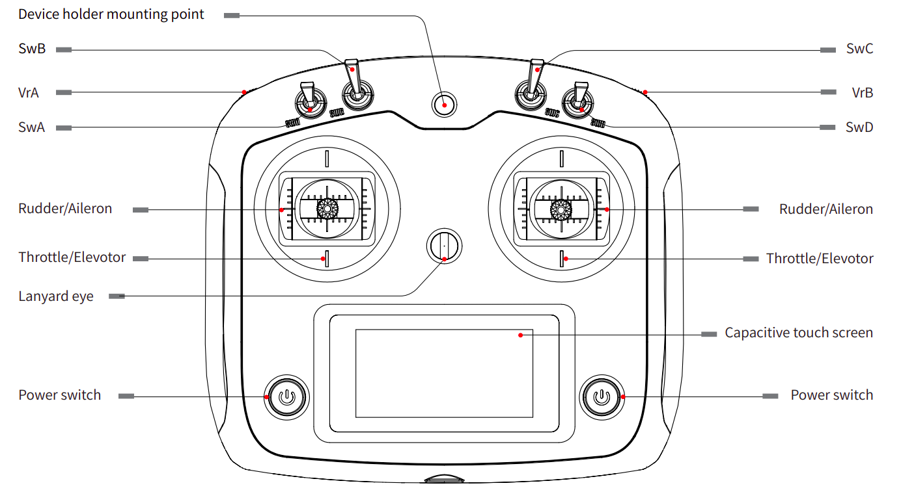

Remote Controller Usage
RC Overview
The SLATE comes with a FlySky FS-i6S remote controller. The RC can command velocities to the SLATE directly without the use of secondary computer.
Using the RC
- Turn on the Remote Controller by holding down both power switches. The screen with turn on and a chime will play.
- Make sure all switches (SwA, SwB, SwC, SwD) are placed in the UP position on startup for safety.
- Enable manual control of the base by setting the second switch from the left (SwB) to its MIDDLE position.
- Use the left stick up/down to command forwards or backwards linear velocities.
- Use the right stick left/right to command counter-clockwise or clockwise angular velocities.